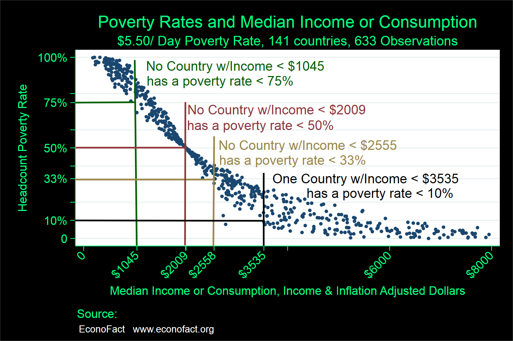

Poverty Reduction and Economic Growth
Oxford University

The Issue:
Reducing poverty in developing countries has been a longstanding and central concern of development economics. Over the past two decades, there has been a noticeable shift in the approach taken by development economists to address this question. Researchers have increasingly focused their efforts on randomized controlled trials — an experimental approach commonly used in medical research — to determine the effectiveness of anti-poverty programs and interventions. This shift was highlighted by the 2019 Nobel Prize in Economics awarded to Abhijit Banerjee, Esther Duflo and Michael Kremer, which recognized their work for breaking down the issue of fighting global poverty into "smaller, more manageable, questions – for example, the most effective interventions for improving educational outcomes or child health." One question that remains, though, is how much overall reduction in the poverty rate one can expect from projects, programs or policy interventions that raise the well-being of those in absolute poverty at a given level of income, versus how much poverty reduction comes from broad-based economic growth.
1.1 Billion people have been lifted out of extreme poverty in the last 25 years. Broad-based growth is the most important source of poverty reduction.
The Facts:
- In the last quarter century 1.1 billion people, about one-seventh of the world’s population, have been lifted out of extreme poverty. Yet progress has been uneven across different regions and significant challenges remain. A dramatic reduction of extreme poverty in East Asia, particularly in China, accounts for an important share of the advances in combating global poverty, with poverty reductions in South Asia also contributing their share. In contrast, progress has been much slower in Sub-Saharan Africa (see here). The World Bank counts all persons in a household as “poor” if the household per capita daily consumption or income is below a “poverty line.” It uses three different thresholds, $1.90, $3.20, and $5.50 per person per day, where local currency values are translated into 2011 dollar values, and taking into account the fact that goods and services are cheaper in poorer countries (so-called “purchasing power parity” currency conversion rates). The World Bank notes a marked reduction in extreme poverty (less than $1.90 per day) over the past quarter century, with a decrease from 36 percent in 1990 to 10 percent in 2015. Still, over 700 million people around the world continued to live in extreme poverty in 2015.
- One way to consider the relationship between economic growth and poverty is to look across countries and compare median incomes and the share of the population living in poverty. The median income is the income level at which half the population has an income higher than this amount and half the population has an income below this amount. Statisticians focus on median income rather than average income because a small number of people with very high levels of income alter the average much more than the median and can give rise to a distorted picture of the income profile of a country.
- In theory, two countries could have the same median income and yet have very different poverty rates. Differences in how income is distributed within countries could make it so that two countries with the same median income could have very different poverty rates. For an extreme example, consider a country with a median income of $5,000 per capita (the equivalent of about $13.70 per person per day); This country could have no one living with an income of less than $5.50 per day, effectively having a rate of zero poverty under a $5.50 dollar-a-day threshold; Alternatively, half of the population could be living with an income less than $5.50 a day (in which case no one would have an income in the range between $5.50 and $13.70) — and, in this case, there would be a 50 percent poverty rate. Thus, there is not necessarily a tight relationship between the median income in a country and its poverty rate.
- However, in actuality, there is an extremely tight relationship between median income and poverty rates across countries. Using data for 633 observations on 141 countries and the poverty threshold of $5.50 per person per day, the correlation between poverty rates and poverty predicted on the basis of median income alone is 99 percent (the richest 28 countries that have very low poverty rates are excluded from this analysis). This means that pretty much all of the variation in poverty rates across countries can be accounted for by their differences in median income. This implies that one might expect significant reductions in the share of the population living in poverty when countries move to higher levels of median income. To illustrate, I estimate on the basis of this relationship that if a country at the average income of the lowest quartile of countries were to grow by two percent a year for 20 years (which is roughly the average growth in the post WWII era) its rate of poverty would fall by about half to 35.9 percent at the $1.90 a day poverty level (see here).
- The chart illustrates the relationship between median income and the share of a country's population living in poverty. It shows the lowest poverty rate observed for 141 countries for a variety of years between 1980 and 2015 at different levels of median income or median consumption per capita. (Consumption and income data are all in terms of 2011 U.S. dollar values adjusted for differences in purchasing power across countries.) No country with median income per capita below $2558 per year ($7.00 per day) had less than a third of the population living in poverty (see chart). Only one country with median income or consumption below $3535 had a poverty rate less than 10 percent. No country with median income or consumption below $1045 had less than 75 percent of the population living in poverty (e.g. Angola, with 2008 median consumption of $1035, had a poverty rate of 80 percent).
- Changes in countries’ median incomes or median consumption and changes in their respective poverty rates are also very highly correlated. An analysis of the change in a country’s income or consumption over a decade or more and its associated change in the poverty rate over that same period for the 114 countries with reliable data on these longer spells illustrates this, with a correlation of about 93 percent. Of course, some countries had more poverty reduction than what would be predicted given their income or consumption growth (e.g. Indonesia, Nepal) while others had less (e.g. Mali, Swaziland) but, by and large, poverty reduction was very accurately predicted by the change in median income.
- None of this analysis turns on the magnitude or efficacy of countries’ anti-poverty programs. But that is precisely the point. One can predict extremely accurately the level and change in absolute poverty (at a variety of threshold poverty levels) without any references to changes in the distribution of income below the median level, which would be the type of change that one might imagine anti-poverty programs target. There is no evidence that these programs have, of yet, been an important source of differences in the rates of poverty or in the pace of overall poverty reduction.
- Determining what promotes sustained growth for poor countries and how to implement policies that increase or sustain growth, however, remain deep research and policy challenges. The Nobelists (and many others) have rightly pointed out that one does not get reliable guidance on appropriate policies to promote growth from the earlier generation of simple analyses that associate certain preconditions with subsequent growth, especially those analyses that do not take into account more complex differences across countries’ experiences and circumstances. More recently, economists have attempted to come up with more practical advice by studying the episodic nature of developing country growth spurts (as here) as well as what is associated with more sustained growth accelerations and decelerations (here, here and here among many others). Moreover, “growth diagnostic” approaches (an example of one such approach here) attempt to map the specific facts and conditions of a country to policy recommendations. While this represents progress in providing useful guidance for policy makers, all agree there is more research to be done to improve these approaches. The hope is to provide empirics and tools that produce a better chance of good decisions on the range of important choices developing country politicians and policy makers have to make.
What this Means:
Broad-based growth, defined as the process that raises median income, is far and away the most important source of poverty reduction. There is no instance of a country achieving a headcount poverty rate below 1/3 of its population (at moderate poverty line of $5.50) without achieving the median consumption of that of Mexico. This is not to say that there do not exist anti-poverty programs that are cost-effective and hence should be expanded, or, conversely, that there are anti-poverty programs that are not cost-effective (or even have zero impact on poverty) and should be cut back or eliminated. Analyses of these types of programs would enable a more efficient use of resources devoted to poverty reduction. But large and sustained improvements in global poverty will almost certainly have to focus on how to raise the productivity of the typical person in a poor country, which is a key source of national income growth.